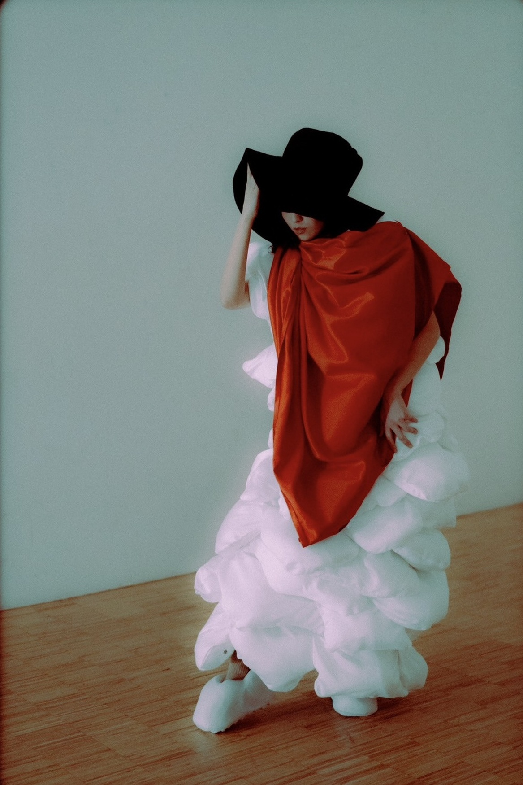
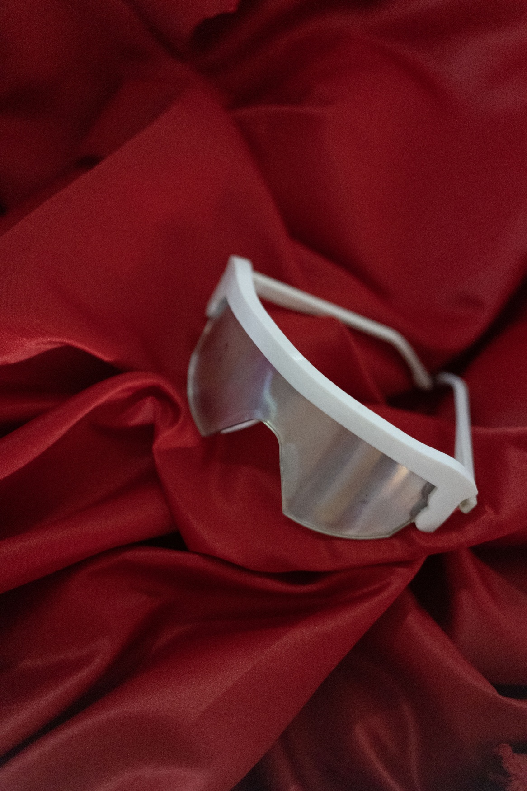

Multidisciplinary designer based in Tokyo with a background in fashion and product design. My work explores objects and accessories through CAD modelling and rapid prototyping using tools such as Fusion 360 and 3D printing. I am interested in experimenting with form, materials, and wearable objects.
Bachelor of Design in Fashion
Toronto Metropolitan University (4 years)
Graduate Collection:
Designed and produced 3D-printed footwear and eyewear.
Employment
CFCL | Assistant DesignerTokyo, Japan (2025 – Present)
Managed studio samples and maintained the product archive
Supported fittings, photoshoots, and daily design team operations
Supported accessory development through CAD modelling and prototyping using Fusion 360
Contributed to prototyping and product development processes
House of Viviano | Studio AssistantTokyo, Japan (2024)
Assisted with studio and showroom operations
Managed inventory and sample organization
Supported client interactions and showroom presentations
Skills
Product / CAD Design
Fusion 360
CAD modelling for accessories and product design
Rapid prototyping
3D printing (FDM / SLA)
Software
Adobe Illustrator
Adobe Photoshop
CLO 3D
Languages
English (native)
Japanese (fluent spoken, conversational written)
Justice
Jacket
Justice
Jacket
View Project →
Eyewear
Justice
Eyewear
Lighter
Justice
Lighter
View Project →
Jacket →A structured jacket referencing the Strangeways Prison Riot and MF DOOM's Strange Ways. Metal as symbol — neutral in itself, transformed through human intervention.
Mutation

Collection
Mutation
Collection
View Project →

Eyewear
Mutation
Eyewear
Footwear
Mutation
Footwear
View Project →
Collection →Inspired by AKIRA — exploring the uncertainty of transitioning into adulthood through exaggerated volume and evolving forms.